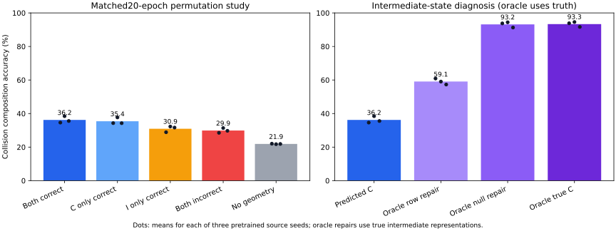

2026-10-07T19:57:35.352366+00:00
本轮结论：PermWorld存在局部关系正确性收益；矩阵与多项式没有复现稳定复合优势。原生或单步预测准确，仍不保证中间表征可以连续使用。不能据此宣称普通训练自发形成了可推广的代数机制。
当前主张：在正确输出监督相同的条件下，关系配对的正确性可能产生额外的复合收益；必须分别检验关系类型、生成元泛化和串联稳定性。现有结果不证明自发发现代数，也不证明独立于输出的机制。
| 几何条件 | 碰撞复合准确率 | 配对双正确 | CKA |
|---|---|---|---|
| 双正确 | 36.20% | 11.48% | 0.1998 |
| 仅补排列正确 | 35.42% | 10.68% | 0.1911 |
| 仅取逆正确 | 30.92% | 5.68% | 0.1434 |
| 双错配 | 29.87% | 4.30% | 0.1308 |
| 无几何约束 | 21.89% | 0.39% | 0.0742 |
双正确−双错配：+6.33个百分点；双正确−仅补排列正确：+0.78个百分点，后者区间跨零。补排列正确性贡献较大，不把双正确必须最好当作预设目标。六次拟合复用三个源模型。
双正确−20轮无几何：+14.31个百分点，三源条件bootstrap区间[12.82,16.03]。这只重采样三个源、固定测试输入；新增20轮基线登记在主20轮结果已观察之后，零系数沿用先前定义，无结果调参。

| 条件 | 单步C | 单步I | 串联CI | 真实C后接I | 修复C读出方向 | 修复C读出零空间 |
|---|---|---|---|---|---|---|
| 双正确 | 99.73% | 96.42% | 36.20% | 93.35% | 59.09% | 93.15% |
| 仅补排列正确 | 99.43% | 95.10% | 35.42% | 92.21% | 56.63% | 92.16% |
| 仅取逆正确 | 99.65% | 97.02% | 30.92% | 94.74% | 57.43% | 94.64% |
| 双错配 | 99.37% | 95.98% | 29.87% | 92.46% | 55.44% | 92.25% |
真实中间表征及修复均为oracle诊断，不能作为自行推断成绩。独立最小二乘复核48个真实模型缓存：修复零空间保留第一步全部31个数字logits，最大改变6.13e-14，同时复现最终预测变化。第一步答案正确仍不保证中间表征可供第二步使用。
平方误差=第一步传播项+第二步真中间误差项+交叉项。报告中的零空间能量比例排除了交叉项，不能解释为因果贡献百分比；线性读出零空间仍可含有其他答案信息。
| 旧冻结实验空间 | 复合准确率 | 真实中间准确率 | 配对双正确 |
|---|---|---|---|
| hidden | 23.46% | 26.52% | 0.86% |
| output | 14.11% | 26.34% | 0.23% |
这些旧算子实验固定编码器，不能当作联合训练、参数量匹配的因果对照。新领域输出组与其他组共享编码器训练和曝光，但算子参数量更小；须同时展示其单步成绩。
F13、四维数值输入、128维普通GELU编码器、3个源种子、6次适配，每组1024个支持输入、900轮；四配对条件、无几何、输出空间共六组。输出监督始终正确，五次原生查询及整轮边际曝光一致。每个领域36组全部完成才打开复合测试。
初始one-hot/数值编码器的矩阵生成元训练成绩99.8%，留出第二生成元7.8%，未通过门槛。仅用可见状态验证选择数值坐标GELU模型，两个独立可见验证集通过后固定；多项式使用相同架构。旧PermWorld为Transformer与双向监督，不能描述成完全相同架构或损失。
| 条件 | 碰撞AB准确率 | 配对双正确 | 预测误差（各自空间） | CKA | 真实中间诊断 |
|---|---|---|---|---|---|
| 双正确 | 9.44% | 0.52% | 0.5550 | 0.0124 | 99.22% |
| 仅A正确 | 8.66% | 0.39% | 0.5601 | 0.0110 | 99.22% |
| 仅B正确 | 7.94% | 0.26% | 0.5094 | 0.0136 | 99.28% |
| 双错配 | 8.92% | 0.39% | 0.5086 | 0.0134 | 99.28% |
| 无几何约束 | 7.55% | 0.26% | 15.6402 | 0.0168 | 99.35% |
| 输出空间诊断 | 7.23% | 0.26% | 0.4854 | 0.0115 | 12.30% |
| 条件 | 原生e | 原生A | 原生B | 算子A | 算子B |
|---|---|---|---|---|---|
| 双正确 | 100.00% | 100.00% | 100.00% | 100.00% | 98.63% |
| 仅A正确 | 100.00% | 100.00% | 100.00% | 100.00% | 98.60% |
| 仅B正确 | 100.00% | 100.00% | 100.00% | 100.00% | 98.67% |
| 双错配 | 100.00% | 100.00% | 100.00% | 100.00% | 98.60% |
| 无几何约束 | 100.00% | 100.00% | 100.00% | 99.90% | 98.44% |
| 输出空间诊断 | 99.58% | 99.54% | 99.35% | 90.49% | 13.51% |
| 双正确对照差值 | 百分点 | 三源条件95%区间 |
|---|---|---|
| 仅A正确 | 0.781 | [0.212, 1.283] |
| 仅B正确 | 1.497 | [0.977, 2.201] |
| 双错配 | 0.521 | [0.169, 0.781] |
| 无几何约束 | 1.888 | [1.410, 2.480] |
| 输出空间诊断 | 2.214 | [1.383, 3.066] |
| 双正确对照：整对输入与来源重采样 | 百分点 | 95%区间 |
|---|---|---|
| 仅A正确 | 0.781 | [-0.391, 2.018] |
| 仅B正确 | 1.497 | [-0.781, 3.841] |
| 双错配 | 0.521 | [-1.562, 2.734] |
| 无几何约束 | 1.888 | [-0.846, 4.818] |
| 输出空间诊断 | 2.214 | [-0.911, 5.273] |
输入不确定性为补充诊断，定义在矩阵汇总结果观察后、多项式复合结果观察前；不改变模型、测试集或终点。矩阵双正确−双错配的来源＋整对输入区间跨零，不能把较窄的固定输入来源区间当作稳定推广证据。
| 配对双正确增量 | 百分点 | 三源固定输入区间 |
|---|---|---|
| 仅A正确 | 0.130 | [0.000, 0.306] |
| 仅B正确 | 0.260 | [0.000, 0.612] |
| 双错配 | 0.130 | [-0.221, 0.391] |
| 无几何约束 | 0.260 | [-0.221, 0.697] |
| 输出空间诊断 | 0.260 | [0.085, 0.391] |
| 条件 | A_squared_identity | B_cubed_identity | ABA_equals_B_squared |
|---|---|---|---|
| 双正确 | 0.0711 | 2.5415 | 1.2140 |
| 仅A正确 | 0.0698 | 2.5272 | 1.2808 |
| 仅B正确 | 0.1072 | 2.6344 | 1.1718 |
| 双错配 | 0.1035 | 2.5460 | 1.1995 |
| 无几何约束 | 18.8874 | 182.5964 | 96.6535 |
| 输出空间诊断 | 0.8562 | 0.9971 | 0.0782 |
辅助规律误差使用原生表征的中心化方差归一化。恒等操作的真实位移为零，原始逐终点数据中的位移NMSE没有可解释分母，不用于该规律的比较。原先登记的主AB误差分母非零。
双正确：直接读取真实AB输入时准确率100.00%；生成元自行串联时9.44%。错误顺序对同一AB目标为7.55%。
| 条件 | 原串联 | 真实中间 | 修复读出零空间 | 修复读出方向 | 第一步平方误差传播倍率 |
|---|---|---|---|---|---|
| 双正确 | 9.44% | 99.22% | 78.84% | 17.97% | 14.48 |
| 仅A正确 | 8.66% | 99.22% | 79.62% | 19.60% | 14.62 |
| 仅B正确 | 7.94% | 99.28% | 76.50% | 17.77% | 14.45 |
| 双错配 | 8.92% | 99.28% | 78.26% | 19.60% | 14.79 |
| 无几何约束 | 7.55% | 99.35% | 18.29% | 9.64% | 7.76 |
这是事后中间状态定位：修复使用真实中间隐藏向量，不能当作推断成绩；第一步全部数字输出保持不变。传播倍率指平方误差之比，不是向量范数倍率。
全部双正确来源的生成元是否均达到解释门槛：True。每个来源复用两个适配池；门槛失败会限制对该领域复合失败的解释。
| 源种子序号 | 已知A | 已知B | 达到门槛 | 双正确复合 | 真实中间复合 |
|---|---|---|---|---|---|
| 0 | 100.00% | 97.66% | True | 9.18% | 99.41% |
| 1 | 100.00% | 97.66% | True | 8.98% | 99.22% |
| 2 | 100.00% | 96.48% | True | 10.16% | 99.02% |
来源分层使用事先固定的可见门槛，不替换全部六次拟合的主结果。通过门槛的来源：[0, 1, 2]。
仅由原生源标签众数固定的常量基线：5.47%；均匀随机猜测的期望：7.69%。众数不使用任何源复合标签或测试标签来选择。
碰撞输入涉及256个划分块，配对连接后有128个连通分量。上述区间只重采样三个来源，不能当作全部测试样本独立的区间。隐藏与输出NMSE在不同空间计算，不能直接比较绝对数值。
矩阵两操作不交换；多项式平移与求导可交换，多项式不作顺序区分。50%上限仅适用于三个真实可见答案的确定性编码，不适用于完整概率输出或隐藏向量。
| 条件 | 碰撞AB准确率 | 配对双正确 | 预测误差（各自空间） | CKA | 真实中间诊断 |
|---|---|---|---|---|---|
| 双正确 | 8.27% | 0.39% | 1.2752 | 0.0107 | 99.87% |
| 仅A正确 | 8.20% | 0.52% | 1.2697 | 0.0104 | 99.87% |
| 仅B正确 | 8.20% | 0.65% | 1.2921 | 0.0113 | 99.87% |
| 双错配 | 8.20% | 0.39% | 1.2737 | 0.0110 | 99.87% |
| 无几何约束 | 6.77% | 0.13% | 30.1027 | 0.0104 | 99.41% |
| 输出空间诊断 | 7.36% | 0.26% | 0.5756 | 0.0098 | 95.18% |
| 条件 | 原生e | 原生A | 原生B | 算子A | 算子B |
|---|---|---|---|---|---|
| 双正确 | 100.00% | 100.00% | 100.00% | 88.18% | 99.97% |
| 仅A正确 | 100.00% | 100.00% | 100.00% | 88.12% | 99.97% |
| 仅B正确 | 100.00% | 100.00% | 100.00% | 88.28% | 99.97% |
| 双错配 | 100.00% | 100.00% | 100.00% | 88.02% | 99.97% |
| 无几何约束 | 100.00% | 100.00% | 100.00% | 87.73% | 99.71% |
| 输出空间诊断 | 99.28% | 99.58% | 99.87% | 42.97% | 94.99% |
| 双正确对照差值 | 百分点 | 三源条件95%区间 |
|---|---|---|
| 仅A正确 | 0.065 | [0.000, 0.153] |
| 仅B正确 | 0.065 | [-0.501, 0.723] |
| 双错配 | 0.065 | [-0.765, 0.918] |
| 无几何约束 | 1.497 | [-0.215, 2.845] |
| 输出空间诊断 | 0.911 | [0.407, 1.325] |
| 双正确对照：整对输入与来源重采样 | 百分点 | 95%区间 |
|---|---|---|
| 仅A正确 | 0.065 | 连通块不足，不给出输入区间 |
| 仅B正确 | 0.065 | 连通块不足，不给出输入区间 |
| 双错配 | 0.065 | 连通块不足，不给出输入区间 |
| 无几何约束 | 1.497 | 连通块不足，不给出输入区间 |
| 输出空间诊断 | 0.911 | 连通块不足，不给出输入区间 |
输入不确定性为补充诊断，定义在矩阵汇总结果观察后、多项式复合结果观察前；不改变模型、测试集或终点。矩阵双正确−双错配的来源＋整对输入区间跨零，不能把较窄的固定输入来源区间当作稳定推广证据。
| 配对双正确增量 | 百分点 | 三源固定输入区间 |
|---|---|---|
| 仅A正确 | -0.130 | [-0.306, 0.000] |
| 仅B正确 | -0.260 | [-0.391, -0.085] |
| 双错配 | 0.000 | [-0.306, 0.306] |
| 无几何约束 | 0.260 | [0.000, 0.612] |
| 输出空间诊断 | 0.130 | [0.000, 0.306] |
| 条件 | T_D_commute | D_fourth_zero_state | T_thirteenth_identity |
|---|---|---|---|
| 双正确 | 1.9496 | 0.9833 | 11837353.2641 |
| 仅A正确 | 1.9537 | 0.9877 | 14334325.2438 |
| 仅B正确 | 2.0253 | 1.0331 | 10032620.3379 |
| 双错配 | 1.9667 | 0.9946 | 13252422.8157 |
| 无几何约束 | 64.8345 | 2257.0882 | 911628210269.0381 |
| 输出空间诊断 | 0.3118 | 19.9349 | 8.1870 |
辅助规律误差使用原生表征的中心化方差归一化。恒等操作的真实位移为零，原始逐终点数据中的位移NMSE没有可解释分母，不用于该规律的比较。原先登记的主AB误差分母非零。
双正确：直接读取真实AB输入时准确率100.00%；生成元自行串联时8.27%。错误顺序对同一AB目标为7.03%。
| 条件 | 原串联 | 真实中间 | 修复读出零空间 | 修复读出方向 | 第一步平方误差传播倍率 |
|---|---|---|---|---|---|
| 双正确 | 8.27% | 99.87% | 31.97% | 11.33% | 2.28 |
| 仅A正确 | 8.20% | 99.87% | 32.10% | 10.68% | 2.26 |
| 仅B正确 | 8.20% | 99.87% | 32.10% | 11.26% | 2.29 |
| 双错配 | 8.20% | 99.87% | 32.29% | 10.94% | 2.25 |
| 无几何约束 | 6.77% | 99.41% | 11.39% | 9.18% | 9.83 |
这是事后中间状态定位：修复使用真实中间隐藏向量，不能当作推断成绩；第一步全部数字输出保持不变。传播倍率指平方误差之比，不是向量范数倍率。
全部双正确来源的生成元是否均达到解释门槛：False。每个来源复用两个适配池；门槛失败会限制对该领域复合失败的解释。
| 源种子序号 | 已知A | 已知B | 达到门槛 | 双正确复合 | 真实中间复合 |
|---|---|---|---|---|---|
| 0 | 91.80% | 100.00% | True | 7.42% | 100.00% |
| 1 | 87.11% | 100.00% | False | 9.57% | 99.80% |
| 2 | 87.50% | 100.00% | False | 7.81% | 99.80% |
来源分层使用事先固定的可见门槛，不替换全部六次拟合的主结果。通过门槛的来源：[0]。
仅由原生源标签众数固定的常量基线：5.86%；均匀随机猜测的期望：7.69%。众数不使用任何源复合标签或测试标签来选择。
碰撞输入涉及39个划分块，配对连接后有1个连通分量。上述区间只重采样三个来源，不能当作全部测试样本独立的区间。隐藏与输出NMSE在不同空间计算，不能直接比较绝对数值。
矩阵两操作不交换；多项式平移与求导可交换，多项式不作顺序区分。50%上限仅适用于三个真实可见答案的确定性编码，不适用于完整概率输出或隐藏向量。
论文草稿已按“同输出监督下的正确关系干预”组织。所有结果以实际完成记录填入；多项式报告全部主结果，并明确部分来源没有通过生成元解释门槛。既有群表征方法已能预测操作序列（Keurti等，ICML2023），本研究不声称首次发现群结构。